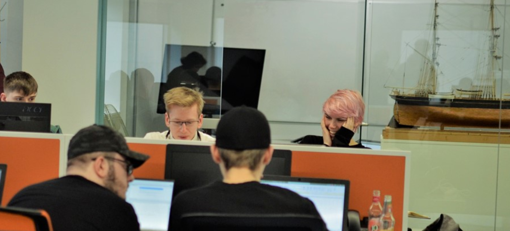
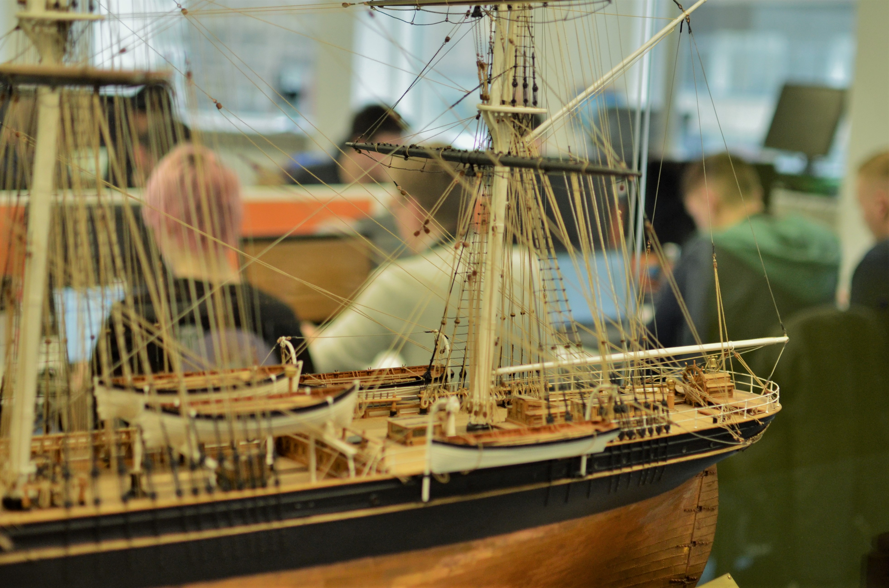

Data Quest 2020

The Event
Given a collection of historical data, we had to predict future trends and distributions. This explanation from the event article sums it up pretty well:
We challenged teams to plant their flag on small plots of land within a larger island, extract resources from those plots and sell off those resources for a profit on the open market. They achieved this by mining several data files, searching for the best spots on the island to claim, taking into account both the distributions of the four resources over the map and the relative values of those resources. Working out those relative values was a problem itself, as the teams had access to some historic pricing data for each resource but they had to extrapolate and determine the market conditions under which they’d cash in.
At the end of the event, Jan and I won the innovation award and came second overall! The innovation award was given to the team who gave the most interesting and convincing presentation of their method.

On Reflection
I wish I had entered hackathons and computer science events sooner. As much as I enjoy pushing myself into challenging situations, these events had always felt as though they were aimed at people who were "better" than I was. Entering and doing well in this event gave me a lot more confidence in my abilities and I'm determined to make these events more open and accesible to people of all abilities (or percieved abilities) in the future.
This year I am organising a hackathon in our university computer science department alongside my coursemate, Hannah. Our aim is to make this event appealing and accessible to all students, providing a space where people are encouraged to produce some of their best work.